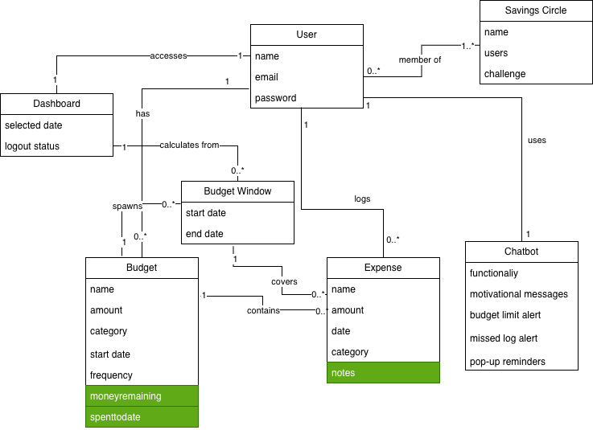
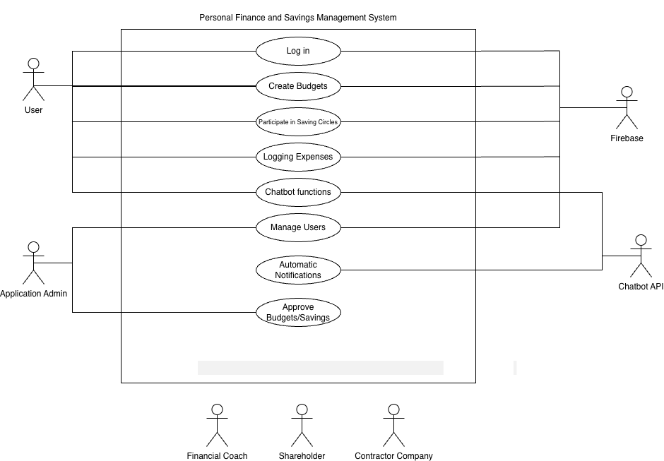
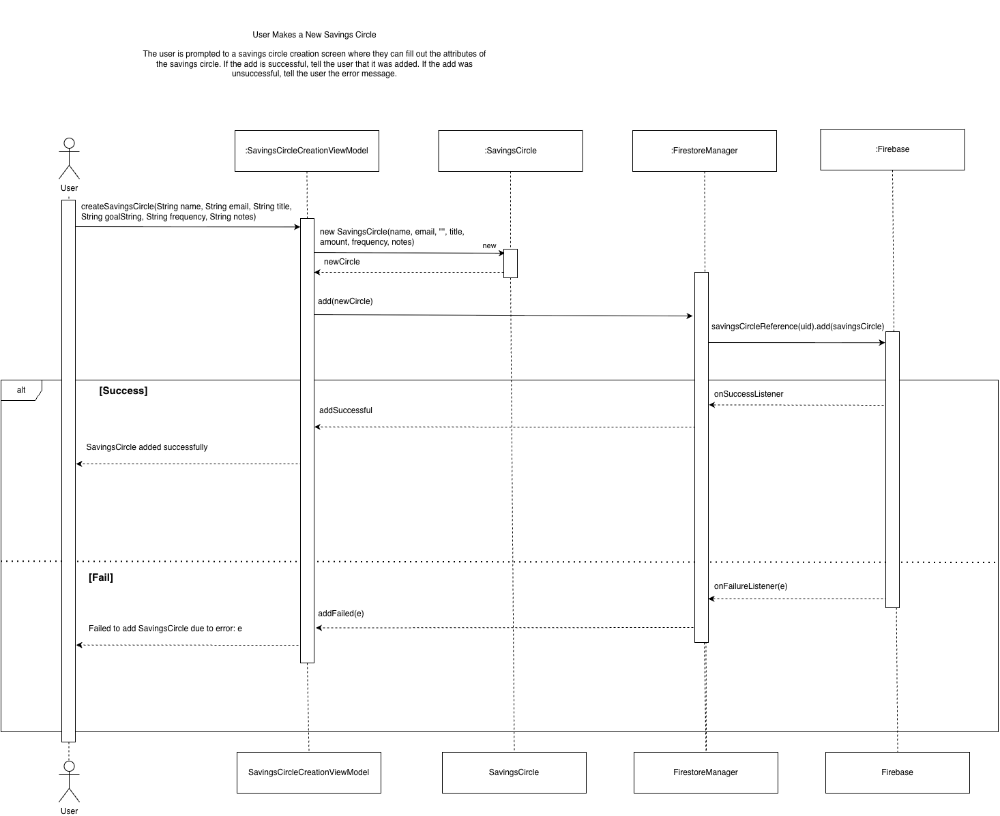
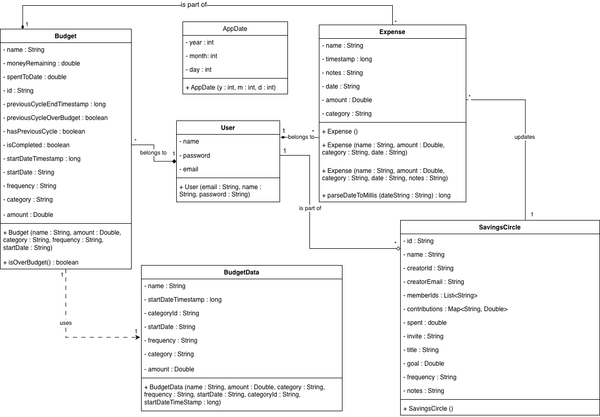

SpendWise is a native Android application designed to bring financial wellness by combining
expense tracking with social accountability. Unlike traditional budgeting tools—which can often
feel isolating or overly complex—SpendWise integrates personal finance management with
“Savings Circles,” a collaborative feature where users can work together with friends to achieve
shared financial goals.
Built using the MVVM architecture, the application leverages Firebase Firestore for real-time
cloud synchronization and authentication. Some of our key features include:
Smart Expense Logging: A simple interface for tracking daily spending with category-based organization.
Interactive Dashboards: Real-time data visualizations powered by MPAndroidChart, including dynamic pie and bar charts.
Social Savings: A unique “Savings Circle” system that provides collaborative saving challenges and progress tracking.
AI-Powered Guidance: An integrated AI chatbot that offers personalized budgeting tips, answers FAQs, and provides motivation.
SpendWise transforms the tedious task of budgeting into an engaging and social experience,
helping users develop healthier money habits while staying accountable through collaboration.
Design & Architecture
The Spendwise Finance App project follows the Model-View-ViewModel (MVVM) architecture style. This ensured seperation of concerns between the data being stored in our app and the UI elements of the app, using ViewModels as a point of
communication between the two. This allows for easier expansion of features if necessary. In addition to using the MVVM architecture, we also implemented several design patterns to ensure better readability and easier expansion for
future features. We implemented the Singleton, Strategy, Factory, and Observer patterns.
Singleton: To handle the storage of each user's budgets and expenses and update that live data on our app, we used Firebase Firestore. Therefore, to ensure we were following MVVM architecture we needed a middleman between this database
and our UI. To do this, we made a Singleton class called FirestoreManager. This was in charge of handling adding/removing budgets, expenses, and users through various methods that could be called through the Activity classes. The Singleton
pattern ensured that only one instance of the class was created so that there wouldn't be several FirestoreManagers interfering with the same data.
Strategy: Originally, when we first added the functionality of the Bar and Pie Chart visualization on the Dashboard UI, we had the Dashboard Fragment in charge of Firebase queries, calculations, and timeframe decisions, resulting in high
coupling of code. Therefore, through the Strategy Design Pattern we were able to seperate these different responsibilities to a different class and ensure that the Dashboard Fragment now only has to call one method to do all of these operations
without having access to the logic.
Factory: When we first implemented the Bar and Pie Chart on our Dashboard screen, we had implemented so that the Dashboard Fragment was in charge of instantiating both charts and applying styling. However, by using the Design Pattern, we were
able to seperate the chart creation and styling from the rest of the Dashboard Fragment trhough a ChartFactory class. This increased readability, adhered to the Single-Responsibility Principle, and gave us a way to add more charts in the future
should we need to without disturbing the rest of the Dashboard UI.
Observer: In order to implement our notification system, we implemented the Observer Pattern. We made a class called the NotificationQueueManager which is the subject for our listeners and stores the current reminder state in a LiveData field.
When a change occurs that requires a notification, the class is able to notify all listeners. In this case, we only had one listener which was our App Activity which then displays a notification accordingly.




User Interface (UI)
The SpendWise app showcases a clean and consistent UI across all its screens, ensuring an intuitive user experience.
The app features 5 main screens accessible via a bottom navigation bar: Dashboard, Expense Log, Budgets, Savings Circles, and AI Chatbot.
Below are screenshots of each main screen along with brief explanations of their functionalities.
Dashboard
The Dashboard screen provides users with an overarching view of their current financial status. It includes dynamic visual charts
such as the pie and bar charts that break down expenses by category and track the budget progress over time.
This screens purpose is to give users quick insights into their financial health. This screen also provides a logout feature, and a profile tab
which the user can access to view and edit their personal look and the user can also toggle light and dark mode.
Budgets
The Budgets screen allows the users to create and manage their budgets. Users can set different time periods for their budgets such as weekly or monthly,
and can set aside specific amounts for different categories of their choice. The budgets are displayed in a list format, showing the total amount allocated,
amount spent, and remaining balance for each budget. Users can also edit or delete existing budgets from this screen. Along with their regular budgets, users
can also view the savings circle group goals that they are a part of.
Expense Log
The Expense Log screen allows the users to view, add, and edit their expenses. The users can log new expenses by clicking on the add new expense
button and filling out the expense creation form which includes fields such as amount, category, date, and notes. The expenses are displayed in a list format
and are sorted by their date of creation. This screen also allows users to view expenses made within their savings circles.
Savings Circles
The Savings Circles screen allows users to create and manage their savings circles. Users can create their own savings cricles groups and then invite other members
through their email addresses. The user can also join other savings circles by accepting invitations. Each savings circle displays the group goal, total contributions made by all members,
and the progress towards the set goal. Users can also view the list of members in each savings circle along with their individual contributions.
AI Chatbot
The AI Chatbot screen provides the users with an interactive AI which can give personalized insights regarding their financial health.
Users can ask questions related to their average budgeting habits, expense trends, and savings circle progress. The AI chatbot uses real-time data from the user's
interactions with the app to provide personalized responses. The AI also has the ability to reference past chat logs to maintain context in conversations.
Functionality Demonstration
Conclusions & Reflections
Throughout the SpendWise Finance App Project, our team learned a lot about the overall functionality
of what goes into the front and backend of a fully functional app. We also learned a lot about common behavioral practices that go into
working with group of people who specialize in different areas. As the project started off and progressed, each sprint
became more and more challenging, but with thorough communication between the team, and properly divided tasks based on each members
interests, we were able to complete the demands of each sprint.
Neel handled most of the the firebase work early on, including the
authentication, storing the user data, expenses, budgets, and setting up the database structure the app heavily relied on throughout the project.
He also worked on implementing the savings circle group invitation process and helped implement the notification system for the app. Ashwanth was responsible for the overall architecture of the app, making sure
the MVVM model was sustained, produced many of the major deliverable diagrams, the dashoboard charts that displayed the breakdown of budgets and expenses, and implementing the AI chatbot feature for the app using Ollama while handling
API calls, real-time streaming, and generating AI based messages and summaries of the users interaction with the app. Smitha focused more on the UI creation
including building the expense creation form, designing savings circle, and the user profile tab along with the additional adding friends feature. Kushi also worked on multiple
key UI features like the budgets screen and budgets creation, saving circle details and proper validation towards creating savings circle, and the dark mode toggle. Sri worked on setting the app's splash screen up in beginning,
added the calendar feature which allowed the app to keep track of real dates, which played a key role in all date related features such as budgets, expenses, and savings circles. He also worked on implementing the savings circle period feature,
and ensured that all of the data affected by the global date remained linked and fucntional. Ved worked on the navigation bar which managed the overall navigation of the app to different features.
Ved also built the budget calculator, expanded the expense log to support savings circle contributions, integrated group goals inot the budgets screen and
worked with Neel to finalize the notification system for budget and expense log warnings.
With all of the tasks mentioned above, the biggest challenge we faced was related to time. Along with the app functionality we were
also expected to create design diagrams deliverables which would take longer than expected. Savings Circle logic with the date joined and overall period
functionality and the app date feature both were more complicated than expected as well, creating unforseen delays. However, with proper communication
and the adaptive nature of spreading the work out accordingly based on which team member is struggling with their work, we were able to combat such problems effectively.
As a team, we learned a lot about the process of developing a functional app using Android Studio, the MVVM structure,
firestore integration, the UI design elements, and many other coding principles such as Design Patterns and GRASP Principles. The team also gained
experience in using Github, learning skills such as cloning repositories, creating and merging branches, fixing merge conlficts and creating PRs. We also used
online work management software such as Jira to help manage our tasks for each sprint. Overall, this project was very helpful in developing technical and behavioral
skills that are very relevant to industry standards, and allowed us to create a working and meaningful app.